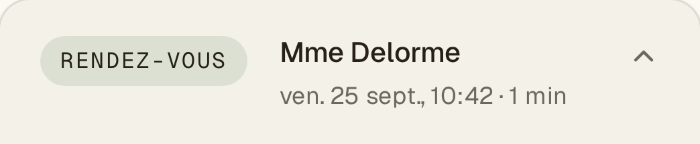
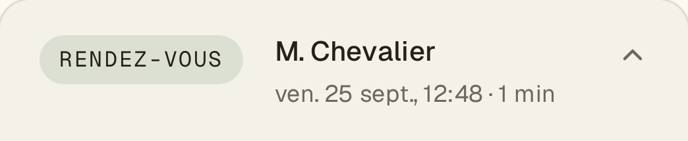
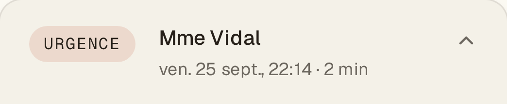
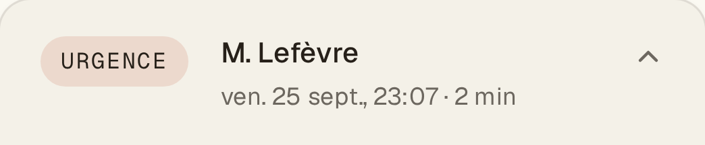

Chaque appel décroché. Chaque rendez-vous posé.




Vokıo
Votre ligne répond même quand vous ne pouvez pas.
Essayez-le vous-même
vokio.fr
Établissements fictifs · captures réelles de app.vokio.fr